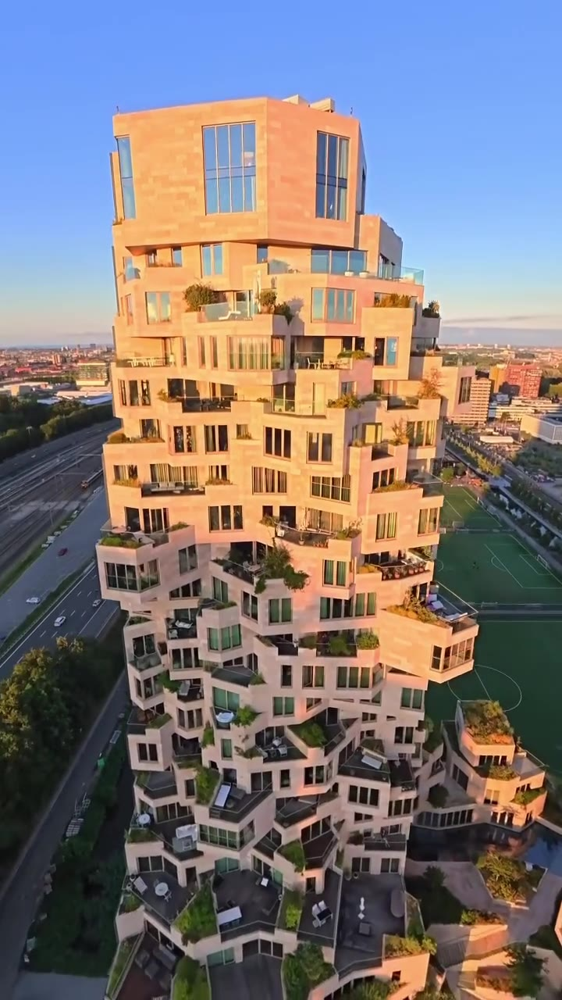

Dienst
Dronefotografie voor vastgoed & makelaars
Een woning verkoop je op ligging. Met een luchtfoto zien kopers in één beeld de tuin, de oriëntatie op de zon, het water om de hoek en de afstand tot het centrum. Dat levert aantoonbaar meer bezichtigingen op.
Waarom luchtfoto’s bij verkoop?
Woningen met dronebeelden vallen op tussen de standaard gevelfoto’s. Je laat zien wat je vanaf de straat niet ziet: de diepe achtertuin, het vrije uitzicht over de Zaan, de parkeerplaats of de nabijgelegen voorzieningen. Voor bedrijfspanden en kavels is een overzichtsfoto vaak zelfs onmisbaar.
Snel en zonder gedoe
Ik plan de vlucht op het beste licht, check vooraf de luchtruimkaart en regel indien nodig de toestemming. Kort daarna heb je de bewerkte foto’s in hoge resolutie, klaar voor Funda, je brochure of social media.
Recent werk
Alle projecten

Vragen
Veelgesteld over vastgoed & makelaardij
Mag je zomaar boven een woonwijk vliegen?
Niet overal. Ik controleer vooraf de no-fly-zones en regels van de ILT en EASA. In de meeste woonwijken in de Zaanstreek is vliegen goed mogelijk; rond Schiphol en in delen van Amsterdam regel ik vooraf toestemming.
Hoeveel foto’s krijg ik?
Dat bepaal je zelf. Een woning wordt meestal vastgelegd in 15 tot 25 bewerkte foto’s. Bekijk de tarieven voor alle pakketten.